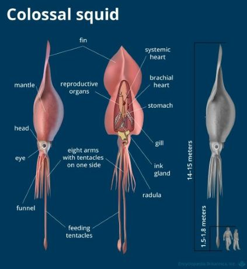

Did you know colossal squids are the heaviest invertebrates in the world? Colossal squids can weigh up to 1,300 pounds! They can also grow up to 14 meters, that's longer than a bus! Colossal squids have the largest eye of any creature, up to the size of a basketball(10-11 inches)! Colossal squids have amazing eyesight due to the size of their eyes. Colossal squids can grow up to 43 feet long (13.5 meters)!
Colossal Squids.Colossal squids live at depths of 1-2 kilometers, in the bitter cold oceans of Antarctica. They live in the part of the ocean called the "Twilight Zone." Little to no light ever reaches here. Animals this deep often grow to massive sizes; this is called abyssal gigantism. Many creatures down here are massive, including: the oarfish, giant squid, colossal squid, and King crabs!

Colossal SquidFun Fact: People in Norway, Germany, and Iceland sometimes found giant and colossal squids either on the beach or attacking their boats; and called them Krakens.
Squids are super cool.
By EdmundSquid Comparrison
Colossal squids and giant squids are both similar, but some things different about them are:
Their eyes. Colossal squids slightly have larger eyes.
Size. Colossal squids are much larger and heavier.
Tentacles and Bodies: Giant squids have longer tentacles and more streamlined bodies while colossal squids are bulkier and have shorter tentacles.
Tentacle Appearance: Colossal squids have sharp, swiveling hooks (B), while giant squids have teethy suction cups(A).